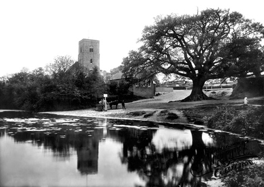

Thursday, September the 9th, 2010
back to: title, date or indexes
There is an old countryside saying, “As ye reap, so shall ye sow / Especially in Fingringhoe”. Now, I have never been to Fingringhoe, not even to explore its salt marshes, and I cannot attest to the truth or otherwise of that piece of rustic wisdom. All I will say, for the time being, pending an excursion to the salt marshes, and perhaps to the village itself, is that the saying seems on the face of it to turn standard agricultural practice on its head. Surely, before we reap, we must sow? And, bearing in mind the startling efficiencies of crop rotation, it is not necessarily the case that we must sow what we have just reaped. We can sow something else. As another countryside saying has it, “Where once I had cauliflowers, now I have peas / In that field beyond the trees”, although that may not actually be a bit of rustic lore. I may have just made it up, whimsically, to no apparent purpose. That is one of the quandaries one faces, when striding around the salt marshes and encountering a peasant given to intoning countryside sayings. You can never be sure whether he is repeating something that has stood him and his ancestors in good stead for generation unto generation, from before even Fingringhoe appeared on the map, gosh even from before there were any maps to speak of, or whether he is just babbling inconsequentialities due to ergot poisoning or simple mischief. Would that there were some kind of test one could carry out, to ascertain whether what one was listening to was genuine rustic wisdom or no! Perhaps, if I made that excursion to Fingringhoe, and to its salt marshes, and put up in a boarding house, and stayed there for years and years, and kept my eyes and ears keenly alert, from dawn to dusk, I might be in a position to sort hard-won truth from hare-brained twaddle. Meanwhile, I can gaze at an old photograph of the village, in case it holds any clues. I suspect it does not.

Hooting Yard on the Air, November the 25th, 2010 : “Nine Years Ago (Again)” (starts around 20:21)